x ≡ a (mod n) and x ≡ b (mod m)
The proof follows from existence of inverses of n and m respectively modulo m and n, which holds when gcd(n,m) = 1.

Content:
Set: a well defined collection of objects.
Elements: objects within a set.
Two sets A and B are said to be equal A = B if they have the same elements.
Cardinality: the size of a set. Ex- A={1,2,3,4} the the cardinality of A, |A|, is 4.
Subset(or): if every element of a set A is also a set B then we say that A is a subset of B. A proper subset is a set A that is strictly contained in B.
Intersection(and): the set containing all elements which are both in A and B.
Disjoint: if the intersection between A and B = {}
Union(andor): the set of all elements which are in either A or B or both.
Properties of the Intersection/Union:
AuB=BuA and Au0=A and AnB=BnA and An0=0
Complement: the not of set A. Or relative complement of A in B written as B-A or B\A is the set of elements in B but not A.
Significant Sets: N-natural numbers | Z-integer numbers | Q-rational numbers | R-real numbers | C-complex numbers
Cartesian Product: of two sets A and B("AxB") = {(a,b) |a∈A, b∈B}
The power set of S denotes P(S) is the set of all subsets of S.
Universal and Existential Quantifiers: The universal quantifier ∀ "for all" and the existential quantifier ∃ "there exists" Quantifiers make the universe finite or "define" it. Ex: (∀ x∈Z)(∃ y∈Z)(y>x) or (∃ y∈Z)(∀x∈Z)(y > x)
Proposition: simply a statement which is either true or false.
Let P, Q, and R be varaibles representing propositions.
Conjuction: P∧Q("P and Q") True only when both P and Q are true.
Disjunction: PvQ("P or Q") True when at least one of P and Q is true.
Negation: ¬P("not P") True when P is false.
Implication: P => Q("P implies Q") This is the same as "if P then Q". (P is the hypothesis and Q the conclusion)
P=>Q =
if P then Q
Q if P
P only if Q
P is sufficient for Q
Q is necessary fo P
Q unless not P
if both P=>Q and Q=>P are true then we say "P if and only if Q"("P iff Q" or P <=> Q)
These are of propositional form.
Law of the Excluded Middle: for any proposition P either P is true or ¬P is true(but not both). A tautology is a propositional form that is always true. A contradition is a propositional form that is always false.
Logically Equivalent propositions will result in the same truth tables.
Given and implication P => Q:
Contrapositive: ¬Q => P
Converse: Q => P
De Morgan's Laws: ¬(P∧Q)≡(¬Pv¬Q) and ¬(PvQ)≡(¬P∧¬Q)
Universal Propositional Equivalences: ¬(∀xP(x))≡∃x¬P(x) and ¬(∃xP(x))≡∀x¬P(x)
Mathematics aims to prove at a level of certainty. A mathematical proof provides a means for guaranteeing that a statement is true. A proof is a finite sequence of steps called logical decuctions. More specifically: start with axioms then make logical deducions which result in a sequence of statments where each successive statmentt is necessarily true if the previous statements were true. This property is enforced by the rules of logic.
A direct proof proceeds as follows. For each x, the proposition we are trying to prove is of the form P(x) => Q(x). A direct proof starts by assuming P(x) for a generic value of x and eventually concludes Q(x) through a chain of implications.
Example: Theorem 2.1 For any a,b,c∈Z, if a|b and a|c then a|(b+c)
Assume that a | b and a|c then there exist integers q1 and q2 such that b = q1*a and c = q2*a. Then b + c = q1*a + q2*a = (q1+q2)a. Since the Z is closed under addition we conclude that (q1+q2)∈Z and thus a | (b+c).
To prove P <=> Q prove P => Q and then Q => P separately.
We know that and implication P => Q is equivalent to its contrapositive ¬Q => ¬P; yet ¬Q => ¬P is sometimes much easier to solve. Thus is how a proof my contraposition proceeds.
Example: Theorem 2.4 Let n be a positive integer and let d divide n. If n is odd then d is odd.
We proceed by contraposition. Assume that d is even. Then by definition d = 2k for some k∈Z. Because d|n then n=dl for some l∈Z. Combining these two statements we have n=dl=(2k)l=2(kl)
Example: Theorem 2.5(Pigeonhole Principle) Let n and k be positive integers. Place objects into k boxes. If n>k, then at least one box must contain multiple objects.
We proceed by contraposition. If all boxes contain at most one object then the number of objects is at most the number of boxes n <= k.
The idea in a proof by contradiction is to assume that the claim you wish to prove is false. Then you show that this leads to a conclusion which is utter nonsense: a contradiction. Hence you conclude that your claim must in fact have been true. ¬P => ¬R∧R≡False
Lemma 2.1 Every natural number greater than one is either prime or has a prime divisor.
Lemma 2.2 If a^2 is even then a is even.
Example: Theorem 2.6 There are infinitely many prime numbers.
We proceed by contradiction. Suppose that there are only finitely many prime numbers, k of them. Then we can enumerate them: p1,p2,...,pk. Now define q := p1p2...pk + 1. This is the prodcut of all the primes plus one. We claim q cannot be prime because by definition it is larger than all the primes p1 through pk. We therefore conclude that q has a prime divisor p. This will be our statemnent R. Next because p1,p2,p3,...pk are all the primes, p must be equal toone of them; thus p divides r := p1p2...pk. Hence p|q and p|r implying p|(q-r). But q-r = 1 implying p <= 1 and hence p is not a prime. This is ¬R thus we have R and ¬R and thus a contradiction.
The idea behind a proof by cases is as follows: sometimes when we wish to prove a claim, we don't know which of a set of possible cases is true, but we know that at least one of the cases is true. What we can do then is to prove the result in both cases;then, clearly the general statement must hold.
Example: Theorem 2.8 There exist irrational numbers x and y such that x^y is rational.
We proceed by cases. The statement of the theorem is quantified by an existential quantifier. Thus to prove our claim it suffices to demonstrate a single x nd y such that x^y is rational. To do so, let x = sqrt(2) and y = sqrt(2). Thus two cases arise: x^y is rational or x^y is irratinal.
Case 1: Assume that sqrt(2)^sqrt(2) is rational. This immediately yields our claim, since x and y are irrational numbers such that x^y is rational.
Case 2: Assume that sqrt(2)^sqrt(2) is irrational. So our first guess for x and y was not right, but now we have a new irrational number to play with, sqrt(2)^sqrt(2). So let's try setting x=sqrt(2)^sqrt(2) and y=sqrt(2). Then x^y = (sqrt(2)^sqrt(2))^sqrt(2) = 2. But now we again started with two irrational numbers x and y and obtained rational x^y. Since case 1 or 2 must hold we thus conclude that the statment of Theorem 2.8 is true.
Note: This is an example of a non-constructive proof: we've proven that some object X exists but without explicitly revealing what X itself is.
Lesson 1: When writing proofs do not assume the claim you aim to prove.
Lesson 2: Never forget to consider the case where your variables take on the value 0.
Lesson 3: Be careful when mixing negative numbers and inequalities.
Mathematical induction is a powerful tool which is used to establish that a statement holds for all natural numbers. Induction brings a way to reason about the infinite natural numbers in a finite way. Suppose a stament holds for some value of n = k(induction hypothesis). Then it must also hold for k + 1(inductive step).
Base Base: Prove that P(0) is true.
Induction Hypothesis: For arbitrary k>=0 assume P(k) is true.
Inductive Step: With the assumption of the inductionHypothesis in hand show P(k+1) is true.
Strengthening the Induction Hypothesis: when using induction it can be very important to choose the correct statement to prove. Sometimes we can't prove our original statement so instead we hypothesize a stronger one. Sometimes the original claim doesn't capture the true structure of the underlying fact we were trying to prove--too vague.
Strong Induction: Says "if dominoes 1 through k fall then so does (k+1) instead of saying if kth domino falls so does the (k+1)st" This can make proofs easier but doesn't allow one to solve anything that isn't solvable with weak induction.
Stable matching is one of the highlights of the field of algorithms. Suppose your run an employment system and your task is to match up n jobs and n candidates. Each job has an ordered preference list of the n candidates, and each candidate has a similiar list of the n jobs. Example:
What would you like to do as head of the employment system is to match each job with a candidate. It turns out ther is an algorithm to achieve "everyone happy". It's called the purpose-and-reject algorithm(aka the Gale-Shapley algorithm)
Unstable: a matching is unstable if there is a job and a candidate who both prefer working with each other over their current matchings(rogue couple).
Stable: a matching of n jobs and n candidates if it has no rogue couples.
Well Ordering Principle: If S subset N and S ~= 0 then S has a smallest element.
Optimality:
Optimal Candidate for a job: For a given job J, the optimal candidate for J is the highest rank candidate on J's preference list that J could be paried with in any stable matching.
Optimal Job for a Candidate: For a given candidate C the optimal job for C is the highest ranked job on C's preference list that C could be paired with in any stable matching.
We think of this algorithm as proceeding in "days" to have clear unambiguous sens of discrete time.
Every Morning: Each job proposes to the most preferred candidate on its list who has not yet rejected this job.
Every Afternoon: Each candidate collects all the offers she received in the morning;to the job offer she like best among these, she responds "maybe" and to the otheroffers she says "no".
Every Evening: Each rejected job crosses off the candidate who rejected its offer from its list.
The above loop is repeated each successive day until there are no offers rejected. At that point each candidate has a job offer in hand; and on this day each candidate accepts their offered job and the algorithm terminates.
Properties:
Lemma 4.3 The propose-and-reject algorithm always terminates with a matching.
Lemma 4.1 The matching produced by the algorithm is always stable.
Lemma 4.2 The matching output by the algorithm is job/employer optimal; thus candidate pessimal.
On of the fundamental ideas in computer science is the notion of abstraction: capturing the essence or the core of some complex situation by a simple model. Some of the largest and most complex entities we might deal with include the internet, the brain, maps, and social networks; in each of these cases ther is an underlying "network" or graph that captures the important features that help us understand theses entities more deeply.
Undirected Graph: defined by a set of vertices V and a set of edges E. Multiple edges between a single par of vertices leads to E being a multiset.
Directed Graph: Let V be a set denoting the vertices of a graph G. Then the set of directed edges E is a subset of VxV.
A graph: G(V,E) where V is the vertex set and E is the edge set.
An edge e={u,v} is incident on vertices u and v, and are thus neighbors.
If G is undirected then the degree of vertex u∈V is the number of edges incident to u, i.e., degree(u)=|{v∈V:{u,v}∈E}. A vertex whose degree is 0 is called an isolated vertex.
If G is directed then there are two different notions of degree due to the directions on the edges. Specifically, the in-degree of a vertex u is the number of edges from other vertices to u and the out-degree of u is the number of edges from u to other vertices.
Let G = (V,E) be an undirected graph.
Path: a sequence of edges {v1,v2},{v2,v3},...,{vn-2,vn-1},{vn-1,vn} thus there is said to be a path between v1 and vn. Commonly its assumed a path is simple, v1 ~= Vn.
Cycle: a sequence of edges {v1,v2},{v2,v3},...,{vn-2,vn-1},{vn-1,vn}{vn,v1} where v1,...,vn are distinct.
Walk: analogous to a path but a sequence with repeated vertices.
Tour: analogous to a cycle but a walk in which starts and ends at the same vertex.
A graph is said to be connected if there is a path between any two distinct vertices. Note: any graph(even disconnected ones) always consist of a collection of connected components, i.e., sets V1,...,Vk of vertices such that all vertices in a set Vi are connected.
Theorem 5.1(Eulers Theorem(1736)) An undirected graph G=(V,E) has an Eulerian tour iff G is even degree and connected(except possibly for isolated vertices).
INSERT PROOF
Planar: a graph is planar if it can be drawn on the plane without crossings.
Example:
The three nonplanar graphs from left to right: First, "three houses-three wells graph" or K33(this notation says there are two sets of vertices each of size three and all edges between the two sets of vertices are present). Second, the "complete graph" or K5 (every edge is present) with five nodes. Third, the four dimensional cube.
Bipartite Graph:a graph where the vertices are split into two groups and edges only go between groups. Formally, we have V = LuR and E subset LxR.
When a planar graph is drawn on the plane, one can distinguish, besides its vertices and edges, the faces of the graph. The faces are the regions into which the graph subdivides the plane.
Euler's Formula: v + f = e + 2(History: Euler characterized all polyhedra as planar graphs and was able to use induction to prove.)
Proceed via induction. It certainly holds when e=0 and v=f=1. Now take any connects planar graph. Two Cases:
If it is a tree then f=1(drawing a tree on the plane does not subdivide the plane) and e=v-1
If it is not a tree, find a cycle and delete any edge of the cycle. This amounts to reducing both e and f by one. By induction the formula is true in the smaller graph and so it must be true in the original one.
Another important fact from Euler's Formula any planar graph: e<=3v-6. This tells us that planar graphs are sparse they cannot have toomany edges. This fact tells us that both K5 and K33 are non-planar.
Theorem 5.3 A graph is non-planar if and only if it contains K5 or K33.
Ther is an interesting duality between planar graphs. For example the octahedron and the cube are "dual" to each other or the tetrahedron is self-dual.
Take a planar graph G and assume it has no bridges and no degree two nodes. Draw a new graph G*: start by placing a node on each face of G. Then draw an edge between two faces if they touch at an edge--draw the new edge so that it crosses that edge. The result G* is also a planar graph. If you construct the dual of G*, it is the original graph: (G*)*=G.
Jumping back to Bipartite graphs, any bipartite graph is two colorable and thus any two colorable graph is bipartite. Proof by the fact that any graph that does not contain any odd length cycles is two colorable and thus bipartite.
Theorem 5.4 Every planar graph can be colored with five colors.
Complete Graphs:
Complete graphs contain the maximum number of edges possible. In an undirected complete graph every pair of distinct vertices u an v a re connected by an edge {u,v}. The notation Kn denotes the unique complete graph on n vertices. Formally: Kn = (V,E) for |V|=n and E={{vi,vj}|vi~=vj and vi,vj∈V}. There are n(n-1)/2 edges in a comp;lete graph. A complete graph is strongly connected and many edges have to be removed before the graph is disconnected into two components.
Trees:
Trees are the opposite of complete graphs, removing just one edge disconnects the graph. A graph G=(V,E) is a tree:
G is connected and contains no cycles.
G is connected and has n-1 edges(where n=|V|)
G is connected and the removal of any single edge disconnects G.
G has no cycles and the addition of any single edge creates a cycle.
Trees can model many natural worldly relationships. Such as a rooted tree, there is a designated node called the root which sets at the top of the tree. The bottom most nodes are called leaves, and the intermediate nodes are called internal nodes. The depth d of the tree is the length of the longest path from the root to a leaf. Moreover the tree can be thought of as grouped into layers or levels, where the k-th level for k∈{0,1,...,d} is the set of vertices which are connected to the root via a path consisting of precisely k edges.
Theorem 5.5 The statements "G is connected and contains no cycles" and "G is connected and has n-1 edges" are equivalent.
Hypercubes:
The hypercube lives in between the sparsely connected tree and the heavily connected fully "connected" graph. The vertex set of the n-dimensional hypercube G=(V,E) is given by V={0,1}^n where {0,1}^n denotes the set of all n-bit strings. In other words, each vertex is labeled by a unique n-bit string such as 0010...0100. The edge set of E is defined as follows: two vertices x and y are connected by edge {x,y} if and only if x and y differ in exactly one bit position. Formally, x=x1x2...xn and y=y1y2...yn are neighbors if and only if there is an i∈{1,...,n} such that xi=yi for all j~=i and xi~=yi.
Lemma 5.1 The total number of edges in an n-dimensional hypercube is n2^(n-1).
To disconnect any subset of S in V of vertices from the rest of the graph, a large number of edges must be discarded. In particular the number of discarded edges must scale with |S|.
Theorem 5.6 Let S be a subset of V such that |S|<=|V-S|(i.e. that |S|<=2^(n-1), and let Es denote the set of edges connecting S to V-S, i.e., Es :={{u,v}∈V | u∈S and v∈V-s}. Then it holds that |Es|>=|S|.
In several settings such as error correcting codes and cryptography we sometimes wish to work over a smaller range of numbers. Modular arithmetic is useful in these settings, since it limits numbers to a predefined range {0,1,...,N-1}, and wraps around whenever you try and leave this range.
More generally we can define x (mod m)(in words "x module m") to be the remainder r when we divide x by m, i.e., if x (mod m)≡r then x=mq+r where 0<=r<=m-1 and q is an integer. If we wish to calculate x + y (mod m) we would first add x+y and then calculate the remainder when we divide the result by m. Note while carrying out any sequence of additions,subtractions, or multiplications mod m, we get the same answer if we reduce any intermediate results mod m.
For any integer m, we say that x and y are congruent modulo m if they differ by a multiple of m: x ≡ y (mod m ) <=> m divides (x - y).
With in modular arithmetic sets arise everywhere. But when calculating what numbers are congruent to 0 (mod 12) for example, a set arises, all multiples of 12 {...,-36,-24,-12,0,12,24,36,...}
Theorem 6.1 If a ≡ c (mod m) and b ≡ d (mod m) then a+b ≡ c + d (mod m) and a*b ≡ c*d (mod m).
How does one compute x^y (mod m) where x,y,m are natural numbers and m > 0. One could compute the sequence of x (mod m), x^2 (mod m), x^3 (mod m),... up to y terms, but this approach requires time exponential in the number of bits in y.
We can do much better using a trick of repeated squaring: The algorithm uses the fact that any y>0 can be written as y = 2a or y = 2a + 1 where a = floor(y/2)
x^(2a) = (x^a)^2 and x^(2a+1) = x * (x^a)^2
A function is a mapping from a set (domain) if inputs A to a set of outputs B: for input x∈A, f(x) must be in the set B. To denote such a function we write f:A->B.
A bijection is a function for which every b∈B has a unique pre-image a∈A such that f(a)=b. This consists of two conditions: f is onto: every b ∈ B has a pre-image a ∈ A and f is one to one: for all a,a' ∈ A, if f(a) = f(a') then a = a'
Lemma 6.6 For a finite set A, f: A -> A is a bijection if there is an inverse function g: A -> A such that for all x ∈ A g(f(x)) = x.
When we want to divide by x (mod m) we need to find y (mod m) such that x * y = 1 (mod m); then dividing by x modulo m will be the same as multiplying by y module m. Such a y is called the multiplicative inverse of x modulo m. When does x have a multiplicative inverse modulo m? If and only if the greatest common divisor of m and x is 1, meaning they share no common factors. The gcd(x,y) is the largest natural number that divides them both.
Theorem 6.2 Let m, x be positive integers such that gcd(m,x) = 1. Then x has a multiplicative inverse modulo m, and it is unique (modulo m).
We write the inverse of x as x^(-1)(mod m). We compute the inverse using Euclid's Algorithm.
Euclid's Algorithm:
How is computing the multiplicative inverse of x modulo m related to finding the gcd(x,m). For any pairs of numbers x,y, suppose we could not only compute gcd(x,y), but also find integers a,b such that d = gcd(x,y) = ax + by. For example, we can write 1 = gcd(35,12) = -1*35 + 3*12, so here a = -1 and b = 3 are possible values for a,b. If we could do this we'd be able to compute inverses as follows. We first find integers a and b such that 1 = gcd(m,x) = am + bx. But this means that bx≡1 (mod m), so b is a multiplicative inverse of x modulo m. Reducing b modulo m gives us the unique inverse we are looking for. So we have reduced the problem of computing inverse to that of finding integers a,b that satisfy above. Euclid's Algorithm does just this.
Theorem 6.3 Let x >= y >= 0. Then gcd(x,y) = gcd(y,x (mod y))
Now in order to compute the multiplicative inverse, we need an algorithm which also returns integers a and b such that: gcd(x,y) = ax+by. Then when gcd(x,y) = 1 we can deduce that b is the inverse of y (mod x). The Extended Euclid's Algorithm makes this accommodation.
The Extended Euclid's Algorithm follows the same recursive structure as Euclid's original algorithm but keeps track of the required coefficients a,b as the recursion unwinds. Specifically takes input x>=y of natural numbers and returns (d,a,b) such that d = gcd(x,y) and d = ax + by.
In the base case (y=0) the algorithm returns the gcd value d = x as before, together with coefficients a=1 and b-0; clearly these satisfy ax + by = d. When y > 0 the algorithm first recursively computes values (d,a,b) such that d = gcd(y,x(mod y)) and d = ay + b(x (mod y)). It then returns the triple (d,A,B) where A=b and B=a-floor(x/y)b; d = Ax + By should be satisfied.
Quick Hand Calculation Method: First, find d = gcd(x,m) to till 1 = gcd(x,m). Then create equations d = x(a) + m(b). Figure out a and b for the first equation and then drop x (mod a) to b in the next equation. Repeat till the bottom and last b is your inverse.
Example: 8x ≡ 9 (mod 15) What is x?
To solve the analogous equation 8x=9 over the rational numbers we would multiply both sides by 8^(-1) to get x = 9/8. Lets do that same thing in arithmetic (mod 15). The inverse of 8 (mod 15) is 2 (since 2*8 = 16 ≡ 1 (mod 15)). Hence we can multiply both sides of the equation by 8^(-1) ≡ 2 to get x ≡ 18 (mod 15) ≡ 3 (mod 15). So x = 3 and this solution is unique modulo 15.
Claim: For m, n with gcd(m,n) = 1 that there is exactly one x (mod mn) that satisfies the equations:
x ≡ a (mod n) and x ≡ b (mod m)
The proof follows from existence of inverses of n and m respectively modulo m and n, which holds when gcd(n,m) = 1.
Theorem For prime p, and a ~≡ 0 (mod p), a^(p-1) ≡ 1 (mod p)
The basic setting for cryptography is typically described via a cast of three characters: Alice and Bob, who want to communicate confidentially over some (insecure) link, and Eve and eavesdropper who is listening in and trying to discover what they are saying. Lets assume that Alice wants to transmit a message x(written in binary) to Bob. She will apply her encryption function E to x and send the encrypted message E(x) over the link; Bob, upon receipt of E(x), will then apply his decryption function D to it and thus recover the original message: i.e. D(E(x)) = x.
Since the link is insecure, Alice and Bob have to assume that Eve may get hold of E(x). Thus ideally we would like to know that the encryption function E is chosen so that just knowing E(x) doesn't allow one to discover anything about the original message x.
For centuries cryptography was based on private-key protocol. In such a scheme Alice and Bob meet beforehand and together choose a secret codebook which plays the role of the functions E and D above. Public-key schemes such as RSA are significantly more subtle and tricky. The central idea behind the RSA cryptosystem is that Bob is able to implement a digital lock to which only he has the key. Now by making this digital lock public, he gives Alice a way to send him a secure message which only he can open.
The RSA scheme is based heavily on modular arithmetic. Let p and q be two large primes and let N = pq. We will think of messages to Bob as numbers modulo N, excluding the trivial values 0 and 1. Also let e by any number that is relatively prime to (p-1)(q-1). Then Bob's public key is the pair of numbers (N,e). This pair is published to the whole world. Bob's private key, d, is the inverse of e (mod((p-1)(q-1))).
Encryption: When Alice wants to send a message x to Bob, she computes the value of E(x) ≡ x^(e) (mod N) and sends this to Bob.
Decryption: Upon receiving the value y = E(x), Bob computes D(y) ≡ y^d (mod N); this will be equal to the original message x.
Theorem 7.1 Under the above definitions of the encryption and decryption functions E and D, we have D(E(x)) ≡ x (mod N) for every possible message x in {0,1,...,N-1}.
Theorem 7.3 (Prime Number Theorem) Let Π(n) denote the number of primes that are less than or equal to n. Then for all n >= 17 we have Π(n) >= n/(ln(n)). (In facts lim(Π(n)/(n/ln(n))) = 1 as n goes to infinity.)
Polynomials constitute a rich class of functions which are both easy to describe and widely applicable in topics ranging from Fourier analysis, cryptography and communication, to control and computational geometry. A polynomial in a single variable is an expression that has an associated function: p(x) = ad*x^d + ad-1*x^(d-1) + ... + a1x + a0. Here the variables x and the coefficients ai are usually real numbers. We say that a is a root of the polynomial p(x) if p(a) = 0.
Properties of Polynomials:
Property 1: A non-zero polynomial of degree d has at most d roots.
Property 2: Given d+1 pairs (x1,y1),...,(xd+1,yd+1), with all the xi distinct, there is a unique polynomial p(x) of degree (at most) d such that p(xi) = yi for 1 <= i <= d + 1.
If we have a polynomial p(x) of degree d we can divide by a polynomial q(x) of degree <=d by using long division. The result being p(x) = q'(x)q(x) + r(x) where q'(x) is the quotient and r(x) is the remainder. The degree of r(x) must be smaller than the degree of q(x).
Both property 1 and property 2 hold for polynomials when the coefficients and variables x are chosen from the complex numbers or indeed the rational numbers, rather than from the real numbers. However, the proofs do not go through if the values are restricted to being natural numbers or integers. We used addition, subtraction, multiplication, and division in the proofs for property 1 & 2. These operations are still satisfied for complex numbers and the rational numbers. On the other hand we cannot subtract two natural numbers and guarantee that the result is a natural number and dividing two integers does not generally result in an integer so everything falls apart for natural numbers and integers.
However, if we work with numbers modulo a prime m, then we can add, subtract, multiply, and divide (by any non-zero number modulo m). To check this, recall that x has an inverse (mod m) if gcd(m,x) = 1, so if m is prime all the numbers {1,...,m-1} have an inverse mod m.
How many polynomials of degree (at most) 2 are there in modulo m? There are 3 coefficients, each of which can take on one of m values for a total of m^3. Writing p(x) = ad*x^d + ad-1*x^(d-1) + ... + a0 by specifying its d + 1 coefficients ai is known as the coefficient representation of p(x). Our polynomial of degree (at most) 2 is uniquely specified by its values at any three points, say x=0,1,2. The polynomial can take any one of m values at each of these three points, for a total of m^3 possibilities. In general, we can specify a degree d polynomial p(x) by specifying its values at d+1 points for a total of m^(d+1) possibilities. These d+1 values (y0,y1,...,yd) are called the value representation of p(x). The coefficient representation can be converted to the value representation by evaluating at 0,1,...,d, and Lagrange Interpolation can be used to convert the value representation to the coefficient representation.
So if we are given three pairs (x1,y1),(x2,y2),(x3,y3) then there is a unique polynomial of degree 2 such that p(xi) = yi. Suppose we are given two pairs (x1,y10),(x2,y2), then there are exactly m choices for y3 and for each choice there is a unique polynomial of degree two that goes through the three points (x1,y1),(x2,y2),(x3,y3). So there are exactly m polynomials of degree (at most) 2 that go through two points (x1,y1),(x2,y2). Note the reason we can count the number of polynomials in this setting is because we are working over a finite field.
Suppose the U.S. government decides that a nuclear strike can be initiated only if at least k > 1 major officials agree to it. With the following scheme:
Any group of k of these officials can pool their information to figure out the launch code and initiate the strike.
No group of k - 1 officials have any information about the launch code, even if they pool their knowledge. For example, they should not learn wether the secret is odd or even, a prime number, divisible by some number a or the secrets least significant bit, etc.
*How do we construct this scheme?
Suppose that there are n officials indexed from 1 to n and the launch code is some natural number s. Let q be a prime number larger than n and s. We will work over GF(q) from now on.
Now pick a random polynomial P(x) of degree k - 1 such that P(0) = s and give P(1) to the first official, P(2) to the second,...,P(n) to the nth. Thus:
Any k officials having the values of the polynomials at k points can use lagrange interpolation to find P, and once they know what P is, they can compute P(0) = s to learn the secret.
Any group of k - 1 officials has no information about s! They have q possible values of the polynomial, thus they have no information about s.
What problems arise when transmitting messages across unreliable communication channels? The channel may cause some parts of the message to be lost, or more seriously corrupted. How do we encode the message by introducing redundancy into it in order to protect against both of these types of errors. Such encoding scheme is known as an "error correcting code". Error correcting codes are a major object of study in mathematics, computer science, and electrical engineering; they belong to a field known as "Information Theory" one of the core computer sciences, along with the theory of computation, control theory, communication theory, and estimation/learning/signal-processing theory.
There are two distinct flavors of error correcting codes: algebraic codes, which are based on polynomials over finite fields, and combinatorial codes, which are based on graph theory. Focus is on algebraic codes.
For example when a file is transmitted over the internet, the file is broken into packets of which some are lost/dropped. Such errors are referred to as erasure errors. Suppose that the message consists of n packets and suppose that at most k packets are lost during transmission. We will show how to encode the initial message consisting of n packets into a redundant encoding consisting of n + k packets such that the recipient can reconstruct the message from any n received packets. Note that in this setting the packets are labeled with headers and thus the recipient knows exactly which packets were dropped during transmission.
We can assume without loss of generality that the content of each packet is a number modulo q, where q is a prime. For example, the content of the packet might be a 32 bit string and can therefore be regarded as a number between 0 and 2^32 - 1; then we could choose q to be any prime larger than 2^32.
Denote the message to be sent by m1,...,mn where each mi is a number in GF(q) thus:
There is a unique polynomial P(x) of degree n - 1 such that P(i) = mi for 1<=i<=n.
The message to be sent now m1 = P(1),...,mn = P(n). We can generate additional packets by evaluating P(x) at points n + j. Thus the transmitted codeword is c1 = P(1),c2 = P(2),...,cn+k = P(n+k). Since we are working modulo q we must make sure that n + k <= q, but q is typically very large.
Thus can uniquely reconstructP(x) from its values at any n distinct points since it has degree n-1. This means P(x) can be reconstructed from any n of the transmitted packets. Once we have reconstructed the polynomial P, we can evaluate P(x) at x=1,...,n to recover the original message m1,...,mn.
Suppose Alice wishes to communicate with Bob over a noisy channel. Her message is m1,...,mn. Some of the characters are corrupted during transmission due to channel noise. Thus Bob receives exactly as many characters as Alice sent but k of them are corrupted and Bob has no idea which k these are.
We will again think of each character as a number modulo q for some prime q. As before we can describe the message by a polynomial P(x) of degree n-1 over GF(q) such that m1=P(1),...,mn=P(n). Alice must transmit n + 2k characters to guard against k general errors. Thus the encoded codewrod is c1,...,cn=2k where cj = P(j) for 1<=j<-n+2k, and n + k of these characters that Bob receives are uncorrupted.
For any given subset of n+k values of i between 1 and n+2k there is a unique polynomial P(x) such that P(i) = ri at these values of i. So Bob must find a polynomial P(x) of degree n-1 such that P(i)=ri for at least n+k values of i. How can bob guess this?
Consider the error-locator polynomial: E(x) = (x-e1)(x-e2)...(x-ek) Note that E(x) is a polynomial of degree k(since x appears k times). Bob doesn't know this polynomial but can still utilize it.
Consider:
P(i)E(i) = riE(i) for 1<=i<=n+2k
Note that this holds at points i at which no error occurred since at those points P(i)=ri and it is trivially true at points i at which an error occurred since E(i) = 0.
With this observation n+2k linear equations in n+2k unknowns from which the locations of the errors and coefficients of P(x) can be easily deduced.
Define the polynomial Q(x) := P(x)E(x) which has degree n+k-1 and is therefore described by n + k coefficients a0,a1,...an+k-1. There error-locator polynomial E(x) = (x-e1)...(x-ek) has degree k and is described by k+1 coefficients b0,b1,...,bk but the leading coefficient is always 1.
Probability Theory: suppose you toss a fair coin a thousand times. How likely is it that you get exactly 500 heads? What about 1000 heads? Turns out the changes of 500 heads are roughly 2.5% whereas 1000 heads are so infinitesimally small that its said to be impossible. Those are the questions asked and answered by Probability Theory.
Sampling without Replacement:We pick k <= n elements from an n-element set S ={1,2,...,n} one at a time while removing the sampled element for S. We wish to count the number of different ways to do this, taking into account the order in which the elements are picked. This train of thought leads to the first rule of counting.
First Rule of Counting: If an object can be made by a succession of k choices, where there are n1 ways of making the first choice, and for every way of making the first choice there are n2 ways of making the second choice, and for every way of making the first and second choice there are n3 ways of making the third choice, and so on up to the nk choice then the total number of distinct object that can be made in this way is the product n1 * n2 * n3 *...* nk. This rule is visualized with a branching tree: n1=2, n2=2, n3=3
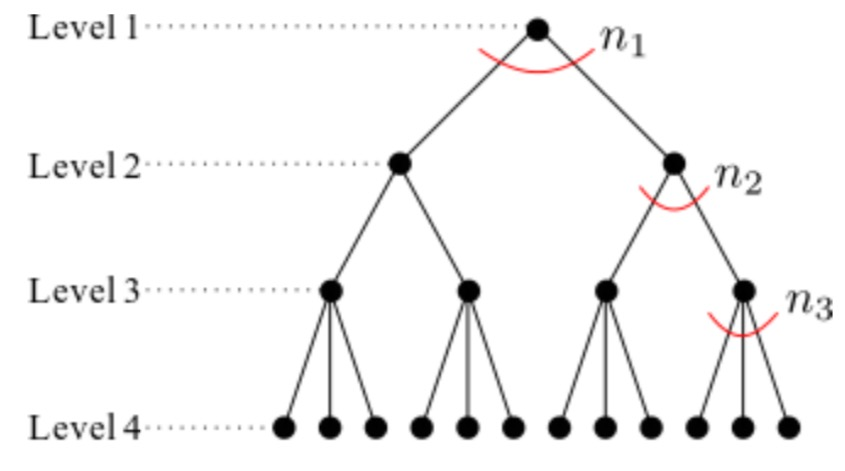
A slightly different question; we would like to pick k distinct element of S = {1,2,...,n} but we do not care about the order in which we pick the k elements. How many ways are there to choose these elements to obtain the same outcome? This train of thought leads to the second rule of counting.
Second Rule of Counting: Assume an object is made by a succession of choice and the order in which the choices are made does not matter. Let A be the set of ordered objects and let B be the set of unordered objects. If there exists an m-to-1 function f from A to B we can count the number of ordered objects(pretending order matters) and divide by m(the number of ordered objects per unordered objects) to obtain |B| the number of unordered objects.
The quantity n!/((n-k)!k!) is called the binomial coefficient, "n choose k" also written (n k) <- transpose that
Sometimes we wish to consider a different scenario of sampling were after we choose an element from S={1,2,...,n} we throw it back into S so that we can choose it again. Assume that we are still picking k elements out of S one at a time and that order matters. How many distinct sequences of k elements can we obtain under this new sampling scheme? We can use the First Rule of Counting, since we have n choices in each trial n1 = n2 = n3 =...= nk = n. So we have a total of n^k sequences.
Examples include rolling two dice: 6^2 or flipping a coin k times n^k different possible sequences/objects.
Say there is an unlimited quantity of apples, bananas, and oranges. How many ways are there to select 5 pieces of fruit to make fruit salad? In this example S={1,2,3} where 1=apples, 2 represents bananas, 3 represents oranges, k =5 since we wish to select5 pieces of fruit, and ordering doesn't matter since selecting an apple followed by a banana will lead to the same salad as selecting a banana then apple. We can think of the fruit choices as bins and we have k=5 balls to throw into them. Now represent the balls inside of each bin as a "0" and the division between the next bin as a "1". Thus we have built a binary string of n+k-1 length, with k "0"s and n-1 "1". We can use "n choose k" where n= n+k-1 and k=k thus (n+k=1 k).
If a set A can be placed into a one-to-one correspondence with a set B(i.e. you can find a bijection between the two -- an invertible pair of maps that map elements of A to elements of B and vice-verse) the |A| = |B|. This is the very heart of what it means to count and is key to many combinatorial arguments.
Combinatorial proofs rely on intuitive counting arguments rather than tedious algebraic manipulation. They feel like proofs by stories--the same story, told from multiple points of view.
Proving the Binomial Theorem:
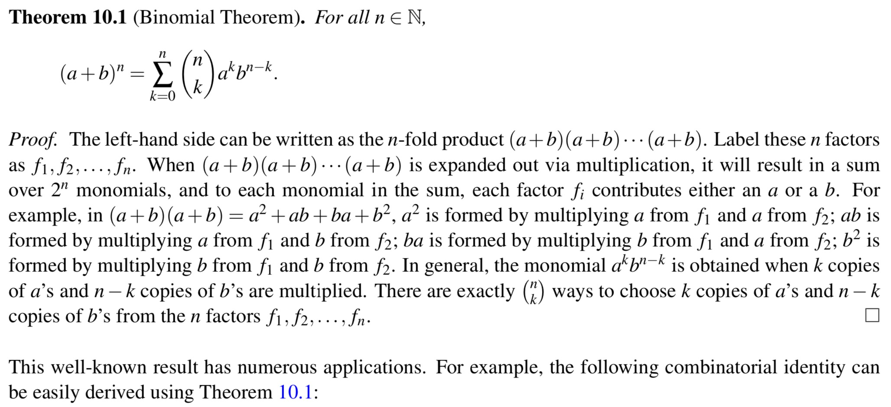
Suppose we collect homeworks of n students, randomly shuffle them and return them to the students. If we related this experiment many times, then on average how many students would receive their own homework? Label the homeworks as 1,2,...,n and let Πi denote the homework that is returned to the i-th student. Then the vector Π =(Π1,...,Πn) corresponds to a permutation of the set {1,...,n}. Note that the Π1,...,Πn ∈ {1,2,...,n} are all distinct, so each element in {1,...,n} appears exactly once in the permutation Π. In total there are n! distinct permutations of {1,...,n}. In this setting the i-th student receives their own homework if and only if Πi = i. So how many indices "i"s satisfy Πi=i. These are termed fixed points of the permutation Π. So on average how many fixed points are there?
Derangement: A permutation with no fixed points.
Theorem 10.2: For an arbitrary positive integer n >= 3 the number of Dn of derangements of {1,...,n} satisfies Dn = (n-1)(Dn-1 + Dn-2)
This Theorem is proven using recursion, alternatively we can use the Principle of Inclusion Exclusion to solve for the number of derangements.
Let A1 and A2 be two subsets of the same finite set A, and suppose we want to count the number of elements in A1∪A2. If A1 and A2 are disjoint then clearly |A1∪A2| = |A1| + |A2|. But if A1 and A2 have common elements then those elements would be counted twice with the previous formula. To correct this we need to subtract |A1∩A2| from |A1| + |A2| thus yielding:
|A1∪A2| = |A1| + |A2| - |A1∩A2| or:
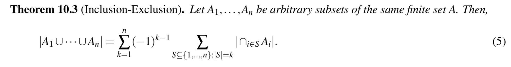
Application in Derangements:
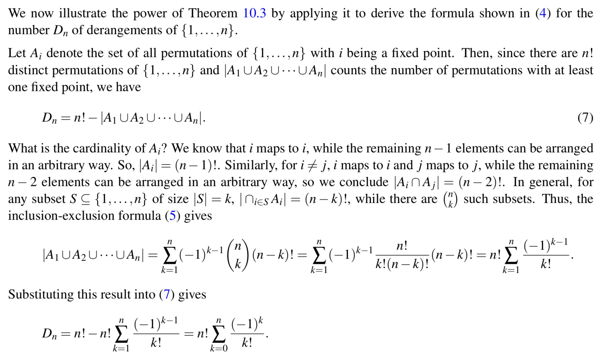
What are the connections to be made between infinity and the fundamental nature of computation and proof?
Two finite sets have the same size if and only if their elements can be paired up so that each element of one set has a unique partner in the other set, and vice versa. This concept is formalized as bijection. Consider a function f that maps elements of a set A(domain of f) to elements of set B(range of f). Since f is a function it must specify for each element x ∈ A exactly one element f(x) ∈ B. Written f: A -> B. We say f is a bijection if ever element a ∈ A hahs a unique image b = f(a) ∈ B, and every element in b ∈ B has a unique pre-image a ∈ A: f(a) = b.
f is one-to-one function(injection) if f maps distinct inputs to distinct outputs, x ~= y => f(x) ~= f(y).
f is onto(surjective) if it "hits" every element in the range, (∀y∃x)(f(x)=y).
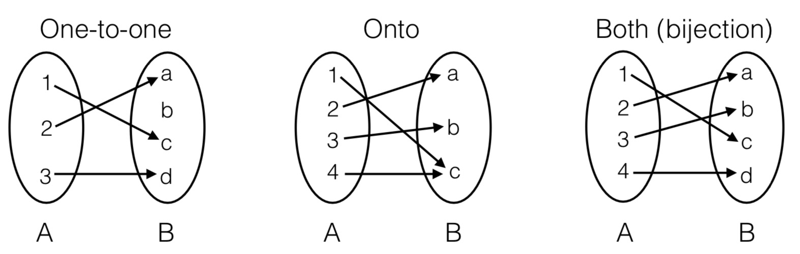
We determine whether two sets have the same cardinality with demonstrating a bijection f between the two sets. Any set S is countable if there is a bijection between S and N or some subset of N, thus any finite set S is countable.
For example: Is the cardinality of Q(rational numbers) greater than N(natural numbers). Surely it has to be since there are infinitely many rational numbers between any two natural numbers. If there is a one-to-one function f:A->B then the cardinality of A is less than or equal to that of B. The idea is to map each pair (a,b) to its position along along the spiral, starting at the origin. It is clear that this mapping maps every pair of integers injectively to a natural number because each pair occupies a unique position along the spiral. This tells us that |Q| <= |N| thus via the Cantor-Bernstein Theorem N and Q have the same cardinality.
We have established that N,Z,Q all have the same cardinality. What about R the set of all real numbers? No there are more real numbers than rationals. That is, there is no bijection between the rationals and reals.
Rational numbers will always be represented as recurring decimals while irrational ones will be represented as non-recurring ones.
Theorem: The real interval R[0,1](and hence also the set of real numbers R) is uncountable.
Proof: Proceed with contradiction, there is a bijection f: N->R[0,1]. Then, we can enumerate the real numbers in an infinite list f(0),f(1),f(2),... as follows:
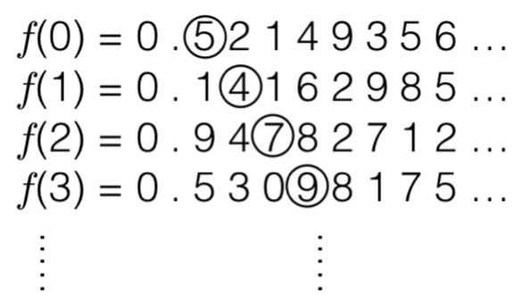
The number circled in the diagonal can be viewed as some real number r=0.5479..., since it is an infinite decimal expansion. Now consider the real number s obtained by modifying every digit of r, say by replacing each digit d with d + 2 (mod 10); thus s = 0.7691. Claim that s does not occur in our infinite list of real numbers. Suppose for contradiction that is did, adn that it was the nth number in the list, f(n). But by contradiction s differs from f(n) in the (n+1)th digit, so these two numbers cannot be equal! So its constructed such that this real number s that is not in the range of f. But this contradicts the assertion that f is a bijection. Thus the real numbers are not countable.
The Cantor Set is a remarkable set construction involving the real numbers in the interval [0,1]. The set is defined by repeatedly removing the middle thirds of line segments infinitely many times, starting with the original interval. For example the first iteration would involve the removal of the (open) interval (1/3,2/3), leaving [0,1/3]U[2/3,1]. The Cantor set contains all points that have not been removed: C = {x : x not removed}. How much of the original unit interval is left after this process is repeated infinitely? Start with an interval of length 1, and after the first iteration 1/3 of it is removed leaving 2/3. For the second iterations 2/3 * 2/3 of the original interval.
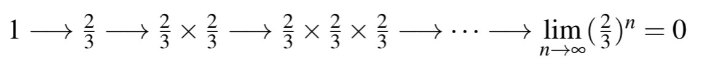
So the Cantor set is empty...No, the measure of the Cantor set is zero; the Cantor set consists of isolated points and does not contain any non-trivial intervals. In fact not only is the Cantor set non-empty it is uncountable. C = {x ∈ [0,1] : x has a ternary representation consisting only of 0's and 2's} Using this characterization we can set up an onto map f from C to [0,1]. Since we already know that [0,1] is uncountable this implies that C is uncountable also. The map f is defined as follows: for x ∈ C, f(x) is defined as the binary decimal obtained by dividing each digit of the ternary representation of x by 2. If x = 0.0220 the f(x) is the binary decimal 0.0110. The set of all binary decimasl 0.xxxx... is in one-to-one correspondence with the real interval [0,1] and the map f is onto because every binary decimal is the image of some ternary string under f. This completes the proof that C is uncountable.
Let S be any set. Then the power set of S, denoted by P(S) is the set of all subsets of S; formally P(S) = {T : T subset of S}. What is the cardinality of S? If |S| = k is finite then |P(S)| = 2^k(binary string representation of numbers in Set). So for finite sets S, the cardinality of the power set of S is exponentially larger that the cardinality of S. What about infinite(countable) sets? Not countable.
Theorem: |P(S)| > |N|
Thus we have seen the cardinality of P(N) is strictly larger than the cardinality of N itself. The cardinality of N is denoted ℵ0 "aleph null" while that of P(N) is denoted 2^(ℵ0). It turns out that in fact the P(N) has the same cardinality as R and indeed as the real numbers in [0,1]. This cardinality is known as c, the "cardinality of continuum". Even larger infinite cardinalities ("orders of infinity") denoted ℵ1, ℵ2,..., can be defined using the machinery of set theory; these obey rules of arithmetic. The "continuum hypothesis" asserts that c=ℵ1, aka there are no sets with cardinality between that of the natural numbers and that of the real numbers.
"This statement is false" Is the statement true? If the statement is true, then it asserts must be true; namely that it is false. But if it is false then it must be true. So it really is a paradox, and we see that is arises because of the self-referential nature of the statement.
Coding in english:
Print out the following sentence twice, the second time in quotes:
"Print out the following sentence twice, the second time in quotes:"
In this instance we get the exact program as the output. This sort of program is called a quine, and we can always write quines in any programming language. How do we construct quines in general?
The answer is given by the recursion theorem. The recursion theorem states that given any program P(x,y) we can always convert it to another program Q(x) such that Q(x) = P(x,Q), i.e. Q behaves exactly as P would if its second input is the description of the program Q. In this sense Q is "self-aware" version of P, since Q essentially has access to its own description.
Are there programs that run in an infinite loop? In 1936, Alan Turing showed that there is no program that can perform this test. The proof combines self reference, and the fact that programs and data are inseparable in a computer.
Theorem: The Halting Problem is uncomputable; i.e. there does not exist a computer program TestHalt with behavior such that, TestHalt(P,x)= "yes" if program P halts on input x | "no" if program P loops on input x, on all inputs (P,x).
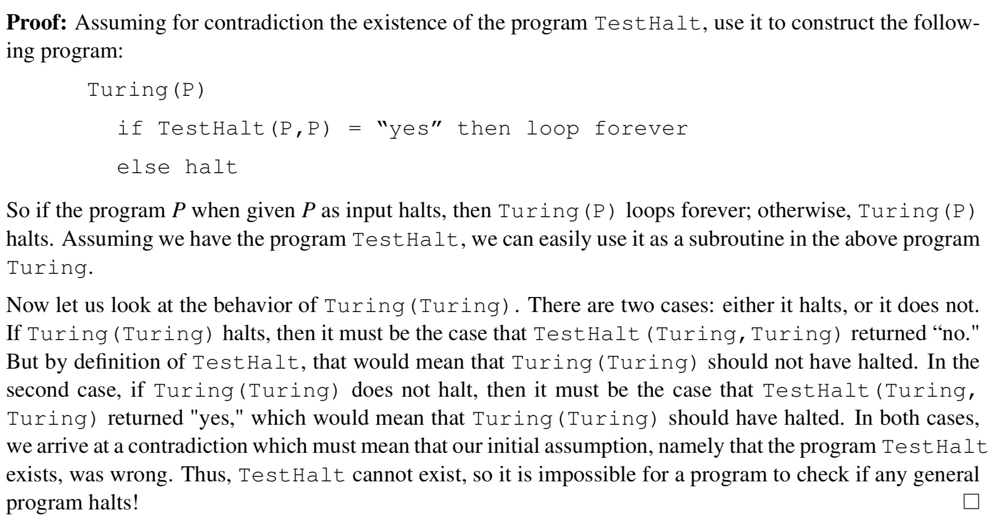
This is a proof by diagonalization. Since the set of all computer programs is countable, we cna enumerate all programs as follows(where Pi represents the ith program):
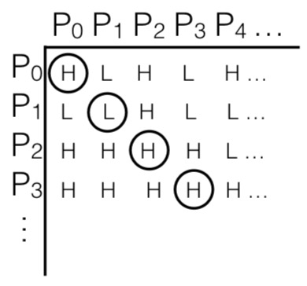
The (i,j)th entry in the table above is H(halts) if Program Pi halts on input Pj, and L(loops) if it does not halt. Now if the program Turing exists it must occur somewhere on our list of programs say as Pn. But this cannot be, since if the nth entry in the diagonal is H, meaning that Pn halts on Pn, then by its definition Turing loops on Pn; and if the entry is L then by definition Turing Halts on Pn. This the behavior is different from that of Pn, and hence Turing does not appear on our list. Since the list contains all possible programs we must conclude that the program Turing does not exist. And since Turing is constructed by simple modification of TestHalt its concluded that TestHalt does not exist.
There are many similar such as whether a program ever outputs anything or if it ever executes a specific line or if two programs produce the same output.
Reduction: reducing one problem "Does P halt on x?" to another problem "Does P' halt on 0?" in the sense that if we know how to solve the second problem, then we can use that knowledge to construct an answer for the first problem. This implies that the second problem is actually as difficult as the first despite the apparently simpler description of the second problem.
Is arithmetic consistent? Is arithmetic complete?
Mathematics is a formal system based on a list of axioms together with rules of inference. The axioms provide the initial list of true statements in our system, and we can apply the rules of inference to prove other true statements, which we can again use to prove other statements and so on.
The first question above asks whether it is possible to prove a proposition P and its negation ~P. If this is the case then arithmetic is inconsistent. If arithmetic is inconsistent(false statements can be proven) then the entire arithmetic system will collapse because from a false statement anything can be deduced, so every statement in the system will be vacuously true.
The second question asks whether every true statement in arithmetic can be proven. If this is the case then arithmetic is complete. In reality there are statements that are quite difficult to prove either true or false.In 1930 Kurt Godel proved that the answer is in fact "no": any formal system that is sufficiently rich to formalize arithmetic is either inconsistent or incomplete.
Sketch of Godel's Proof:
Suppose we have a formal system F, which consists of a list of axioms and rules of inference, and assume F is sufficiently expressive that we can use it to express all of arithmetic.
Now suppose we can write the following statements: S(F) = "This statement is not provable in F."
Case 1: S(F) is provable. Then the statement S(F) is true, but by inspecting the content of the statement itself, we see that this implies S(F) should not be provable. Thus, F is inconsistent in this case.
Case 2: S(F) is not provable. By construction, this means the statement S(F) is true. Thus, F is incomplete in this case, since there is a true statement that is not provable.
To complete the proof it now suffices to construct such a statement S(F). This is the difficult part of Godel's proof, which requires a clever encoding of symbols and propositions as natural numbers.
Probability Theory has its origins in gambling--analyzing card games, dice, and roulette wheels. Todays it is an essential tool in engineering and sciences.
In general, a random experiments consists of drawing a sample of k elements from a set of S of cardinality n. The possible outcomes of such an experiment are exactly counted via the Rules of Counting. Sample Space: the space of all possible outcomes of the experiment, often denoted Ω.
A probability space is a sample space Ω, together with a probability P[ω] for each sample point ω, such that: (Non-Negativity) 0 <= P[ω] <= 1 for all ω∈Ω and (Total one) the sum of the probabilities over all outcomes is 1
The easiest way to assign the probabilities to sample points is to do is uniformly: if |Ω| = N, then P[ω] = 1/N, ∀ ω∈Ω.
An event A is just a subset of the sample space Ω. For any event A⊆Ω we define the probability of A: P[A] = sum of P[ω] for all ω∈A.
Coin Tosses:
If we flip a coin n times we get a sample space of Ω of cardinality 2^n. If the coin has P(H) = p and we consider any sequence of n coin flips with exactly r H's then the probability of this sequence is p^r(1-p)^(n-r). The event C that we get exactly f H's when we flip the coins n times. This event consists of exactly (n K)t sample points and each has probability p^r(1-p)^(n-r); so P[C] = (n k)t * p^r(1-p)^(n-r).
Rolling Dice:
Consider rolling two fair dice, Ω = {(i,j) : 1<= i,j <= 6}. The probability space is uniform(all sample points in Ω). So the probability of event A: P[A] = |A|/|Ω|. For uniform spaces computing probabilities reduces to counting sample points. Now consider two events: the event A that the sum of the dice is at least 10 and the event V that this is at least one 6. By enumerating the sample points contained in each event, it can be shown that |A| = 6 and |B| = 11. Thus P[A] = 6/36 or 1/6 and P[B] = 11/36.
Card Shuffling:

Balls and Bins:
Consider throwing 20 labeled balls into 10 labeled bins. Assume that each ball is equally likely to land in any bin, regardless of what happens to the other balls; in terms of sampling a sequence of k elements from a set S of cardinality n. The set S consists of 10 bins and sampling with replacement k=20 times, order matters since the balls are labeled. The sample space Ω is equal to {(b1,b2,...,b20) : 1 <= bi <= 10 for each i = 1,...,20} where the component bi denotes the bin in which ball i lands. |Ω| = 10^20 since each element bi in the sequence has 10 possible choices and there are 20 elements in teh sequence. More generally if m balls are thrown into n bins the sample space is n^m. The probability space is uniform since each balls i equally likely to land in any bin. Let A be the event that bin 1 is empty. Since the probability space is uniform we simply need to count how many outcomes have this property, aka the number of ways all 20 balls can fall into the remaining 9 bins, which is 9^20. Thus P[A] = (9^20)/(10^20). Let B be the even that bin 1 contains at least one ball, this event is the complement of A, aka it consists of precisely those sample point which are not in A. Thus P[B] = 1 - P[A].
The Birthday Paradox:
The chances that two people in a group have the same birthday. S = {1,...,365}, and the random experiment consists of drawing a sample of n elements from S, where the elements are the birth dates of n people. Then |Ω| = 365^n. This is because each sample point is a sequence of possible birthdays for n people; so ther are n point sin the sequence and each point has 365 possible values. Let A be the event that at least a pair of people have the same birthday. P[A] is hard to compute but the complement is much easier; the event that no two people have the same birthday. Computing the number of ways for no two people to have the same birthday. There are 365 choices for the first person, 364 for the second,..., 365-n+1 choices for the nth person, for a total of 365*364*...*(365-n+1) we are sampling without replacement and order matters. P[A] = 1 - ((365*364*...*365-n+1)/365^n)
Summary:
What is the sample space(the experiment and its set of possible outcomes)?
What is the probability of each outcome(sample point)?
What is the event we are interested in(which subset of the sample space)?
Compute the probability of the event by adding up the probabilities of the sample points contained in it.
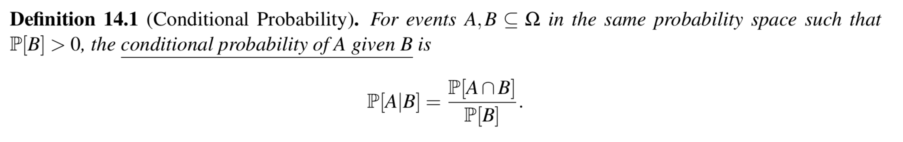
Example:
When dealing 2 cards and the first card is known to be an ace, the second card is also an ace. Let B be the event that the first card is an ace and let A be the event that the second card is an ace. To compute P[A|B] we need to figure out P[A∩B]. Note that there are 52*51 sample points in the sample space, since each sample point is a sequence of two cards. A sample point is in A∩B if both cards are aces, this can happen in 4*3 = 12 ways. Since each sample point is equally likely, P[A∩B] = 12/(52*51) while P[5] the probability of drawing an ace in the first trial is 4/52. Therefore, P[A|B] = (P[A∩B]/P[B]) = 3/51.
Bayesian inference is a way to update knowledge after making an observation. For example, we may have an estimate of the probability of a given event A. After event B occurs, we can update this estimate to P[A|B]. In this interpretation, P[A] is the prior probability; our assessment of the likelihood of an event of interest, A, before making an observation. P[A|B] can be interpreted as the posterior probability of A after the observation, it reflects our updated knowledge.
Bayes Rule & Total Probability Rule:
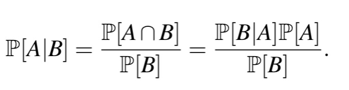
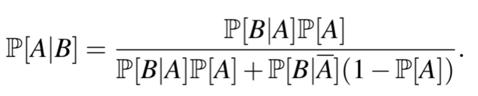
Generalization of Conditional Probability:
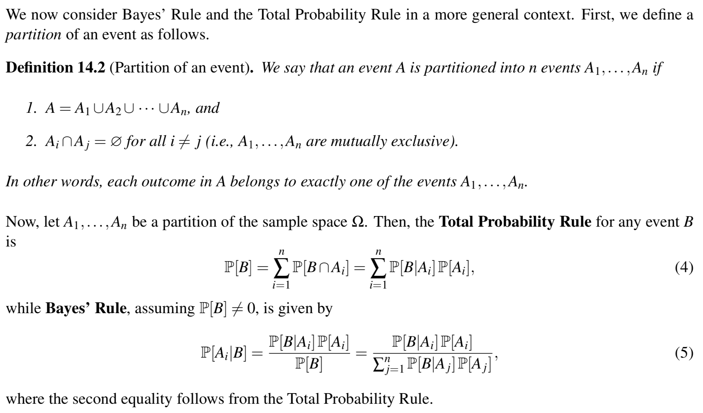
In most applications of computer science the interest falls on things like P[U Ai for 1 <= i <=n] or P[∩ Ai for 1 <= i <=n] where the Ai are simple events. These are often quite difficult to compute.
Independent Events: Two events A,B in the same probability space are said to be independent if P[A∩B] = P[A] x P[B]. Independence has the natural meaning that "the probability of A is not affected by wether or not B occurs."
Mutual Independence:
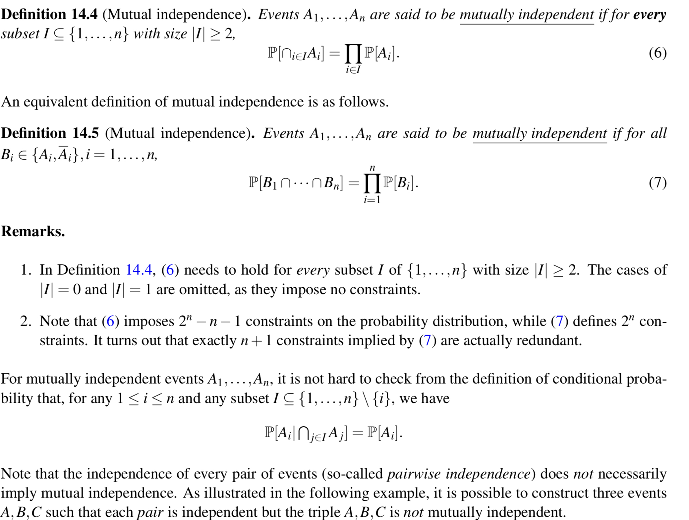

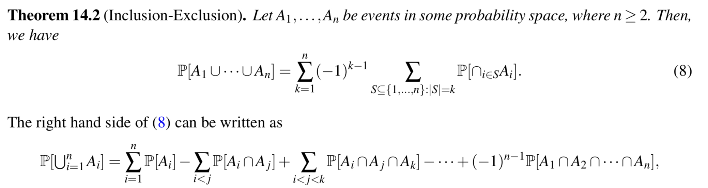
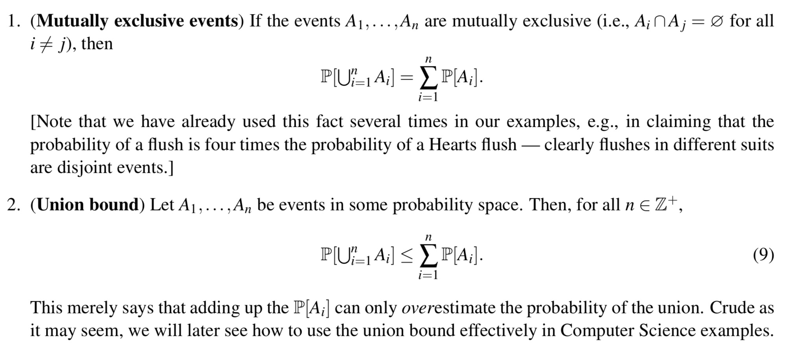
A value X that depends on the outcome of the probabilistic experiment is called a random variable. In most cases the variable X doesn't have a definitive value but instead only has a probability distribution over the set of possible values X can take. The average value of X if the experiment is repeated n times is called the expectation of X.
Random Variable: a variable X on a sample space Ω is a function X: Ω -> R that assigns to each sample point ω ∈ Ω a real number X(ω)
Distribution: the distribution of a discrete random variable x is the collection of values {(a,P[X=a]) : a∈𝓐}, where 𝓐 is the set of all possible values taken by X. Note that the collection of X=a for a∈𝓐 satisfy: any two events X = a1 and X = a2 with a1 ≠ a2 are disjoint, and the union of all these events is equal to the entire sample space Ω.
Bernoulli Distribution(X ~ Bernoulli(p)):
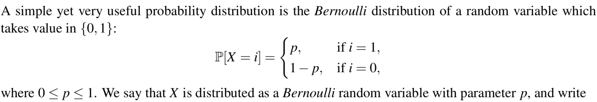
Binomial Distribution(X ~ Bin(n,p)):
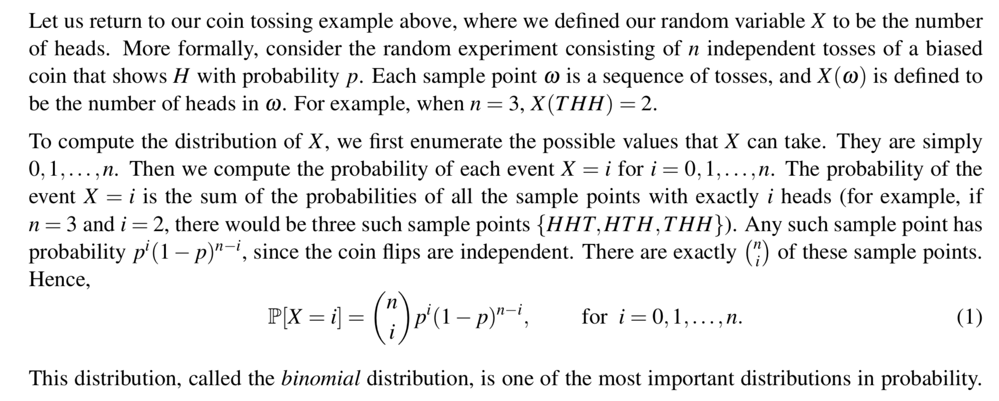
Hypergeometric Distribution(X ~ Hypergeometric(N,B,n)):
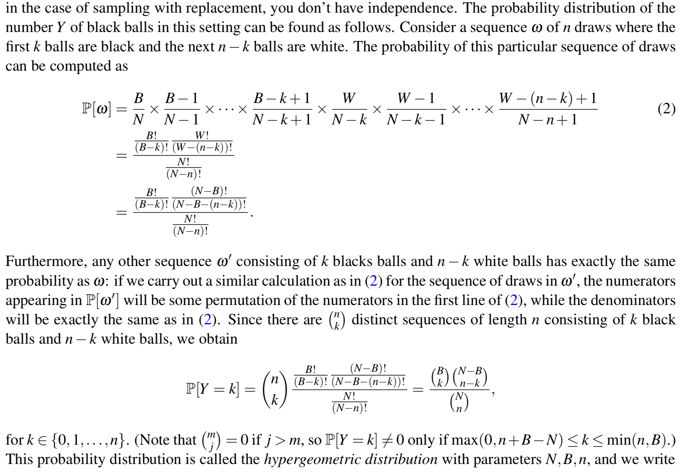
Joint Distribution: for two discrete random variables X and Y is the collection of values {(a,b),P[X=a,Y=b]) : a ∈ 𝓐, b∈ 𝓑}, where 𝓐 is the set of all possible values taken by X and 𝓑 is the set of all possible values taken by Y. When given a joint distribution for X and Y the distribution P[X=a] for X is called the marginal distribution for X, and can be found by "summing" over the values of Y.
Independence: random varibales X and Y on the same probability space are said to be independent if the events X=a and Y=b are independent for all values of a,b. Equivalently the joint distribution of independent r.v.'s decomposes as P[X=a,Y=b] = P[X=a]P[Y=b], ∀a,b
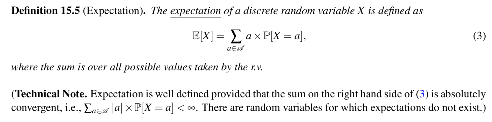